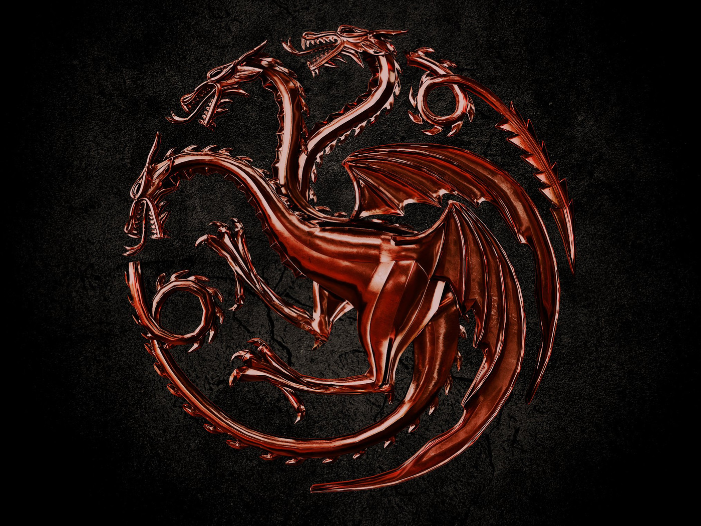

The Story of Paranache
The steam and smoke billowing from the hull of the airship now clouds Ezekiel’s vision. As it begins to clear with a wave from his hands, he gazes upon the vessel in its full glory as it returns from its test flight. A slender elven man leaps from the deck onto a vent on the starboard hull, before springing to land beside Ezekiel. Dorian Toriqui is a Wood Elf from the Silver Coast’s wildlands, his long black hair is tied up into the traditional triple loop of Silver Coast natives. As he regains his balance, Ezekiel places his hand on Dorian’s shoulder to steady him.
“I take it you aren’t a fan?” says Ezekiel in his signature gravel-filled voice.
“I’m not one for heights lest I can see the floor below my feet Ezekiel my friend.” Dorian quips, having now regained his balance.
“Regardless of your personal matters, will it be sufficient as a mode of transportations between the cities?”
”I am afraid so, the thing flies beautifly, less noise than my uncle, and he’s been below the trees for four decades now.”
He points to the side of the now anchored airship, “I’m thinking once we get them really started, racing might be worth an investment”
Ezekiel’s expression turns sour, “These ships are for the benefit of all who reside in the floating cities, it is the first time trade and transportation has been made practical, I will not let my beloved’s creation become belittled to that of entertainment, Dorian!”
The crowd around that was performing inspections and general observers, now begin murmuring amongst themselves, occasionally pointing at the pair.
“Alright I hear you, just a businessman thinking of business, did not mean harm by it”
Ezekiel’s expression returns to normal and he reaches for the green leather bound journal in his belt pouch. He readies an ink pen and shuffles over to the engineer who was aboard during the flight to copy down his notes. Dorian wonders about the dock, stepping with his long slim legs obnoxiously rapping his feet against the wooden boards below. Ezekiel, at the end of his rope, snaps his green journal closed, halting the still rambling engineer. The now angry Ezekiel gathers a small flame in his hand, and casts its direction at the now bent over Dorian. As the flame strikes his behind, the elf leaps with a yelp.
“Oi!!!!” Ezekiel smirks and gestures for the engineer to continue. As Dorian pats out the flame on his trousers, he turns to the wizard and scowls, before leaving the dock and heading towards the newly finished tavern. “Leave it to the dwarves to finish the tavern before the city hall,” thinks Dorian gratefully, his pace increasing. Just as the elf reaches the door to the newly established Sky High Bar, he is knocked forwards onto the ground by a shockwave. Scrambling to his feet Dorian gazes wide eyed as the now flying airship mast. As the fireball erupts, it engulfs the dock and climbs into the sky. Dorian brushes some dust off of his shoulder and waits patiently as the workers around him stand in a panicked awe.
“You sure you translated that book right Ezekiel?” Dorian murmurs aloud.
“Positive,” Dorian turns his head slowly to the now ash covered Ezekiel. “Must have been faulty construction,”says the wizard as the last of the dimensional rip closes up behind him. Dorian enters the bar and grabs a bottle of distilled thunder cloud. He pops the cork and with a small crash the billowing grey smoke leaves the bottle. Ezekiel holds up two glasses and Dorian pours the royal blue liquid into one, before swigging the bottle.
“Well,” says Dorian wiping his mouth, “I suggest you have someone check your measurements.” He pats Ezekiel on the shoulder and lumbers away down the main street of the soon to be founded, capital of the floating cities.
The Story of the Frost Forest

This is all a placeholder...
My Trip to Walmart
...for now